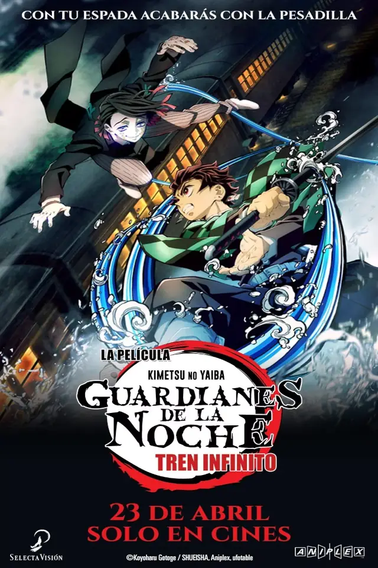
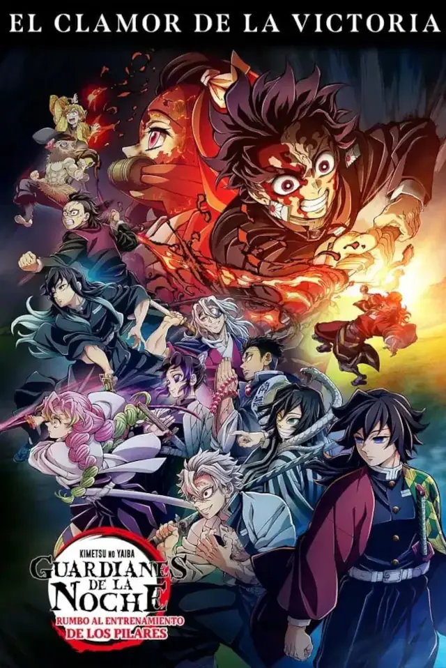
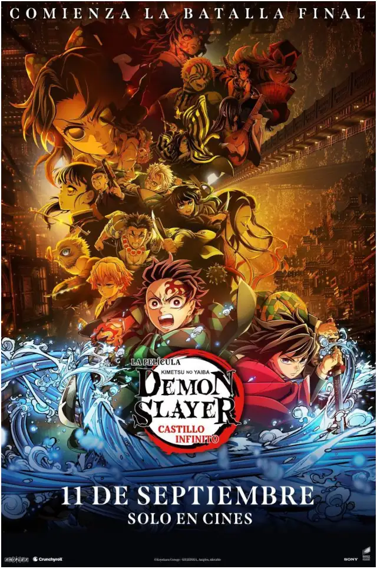

Peliculas




Tanjiro Kamado es un joven que se unió a una organización dedicada a cazar demonios, el Cuerpo de Matademonios, después de que su hermana menor, Nezuko, fuera transformada en uno.
A medida que se fortalecía y forjaba amistad con sus compañeros del Cuerpo de Matademonios, Tanjiro ha combatido contra numerosos demonios junto a Zenitsu Agatsuma e Inosuke Hashibira. En su viaje, ha luchado codo a codo con los espadachines de mayor rango del Cuerpo de Matademonios, los Pilares, incluyendo al Pilar de las Llamas, Kyojuro Rengoku, a bordo del Tren Infinito; al Pilar del Sonido, Tengen Uzui, en el Barrio del Placer; así como al Pilar de la Niebla, Muichiro Tokito, y al Pilar del Amor, Mitsuri Kanroji, en la Aldea de los Herreros.
Mientras los miembros del Cuerpo de Matademonios y los Pilares llevan a cabo un riguroso entrenamiento grupal para fortalecer sus habilidades, el Entrenamiento de los Pilares, en preparación para la inminente batalla contra los demonios, Muzan Kibutsuji aparece en la Mansión Ubuyashiki. Con el líder del Cuerpo de Matademonios en peligro, Tanjiro y los Pilares se apresuran hacia el cuartel general, pero son arrastrados a las profundidades de un misterioso lugar por obra de Muzan Kibutsuji.
El lugar donde han caído Tanjiro y el Cuerpo de Matademonios es la fortaleza de los demonios: la Fortaleza Infinita.
Así, el campo de batalla queda dispuesto, y la batalla final entre el Cuerpo de Matademonios y los demonios está a punto de comenzar.
Es el protagonista, un joven bondadoso y compasivo que se convierte en cazador de demonios para encontrar la cura para su hermana, Nezuko, convertida en demonio. Es muy disciplinado y usa la Respiración del Agua (y más tarde, la Danza del Dios del Fuego).
Un cazador de demonios extremadamente cobarde y ruidoso, que a menudo se desespera por el miedo. Sin embargo, cuando el miedo lo supera y se desmaya, se vuelve increíblemente poderoso y hábil en combate, dominando la Primera Postura de la Respiración del Rayo con una velocidad asombrosa.
Un cazador de demonios impulsivo, salvaje y temperamental, criado por jabalíes en las montañas. Siempre lleva una máscara de cabeza de jabalí. Lucha con dos espadas dentadas y utiliza un estilo de combate único que él mismo creó: la Respiración de la Bestia.